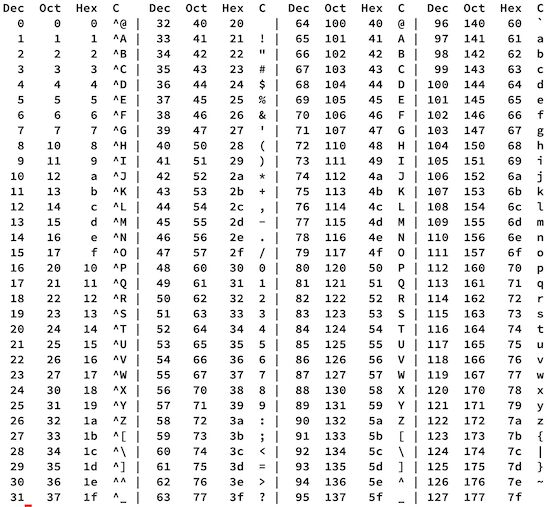

Diez años
June 04, 2026 | ES Ver en LinkedIn
 Miguel García
Miguel García
Diez años trabajando en NETHITS. Y han pasado volando.
Este mes de junio se cumplen 10 años de mi incorporación a NETHITS IT SOLUTIONS.
Sigo disfrutando de la programación como el primer día.
A lo largo de este tiempo, he ido asumiendo tareas de otro tipo, como son la gestión de equipos y proyectos, planificaciones, estimaciones, reuniones y más reuniones.
Compañeros que entran y salen, nuevos retos, oportunidades que se ganan y otras que se pierden, vacas gordas, flacas y del montón.
Diez años dan para mucho, aunque también pasan volando.
Me quedo con varias cosas, sobre todo aprendizajes y mi agradecimiento, pero elijo una y vuelvo al inicio:
Sigo disfrutando de la programación como el primer día.
PD: Ahora mismo soy un Control-J, qué cosas.

Créditos imagen: c-for-dummies.com